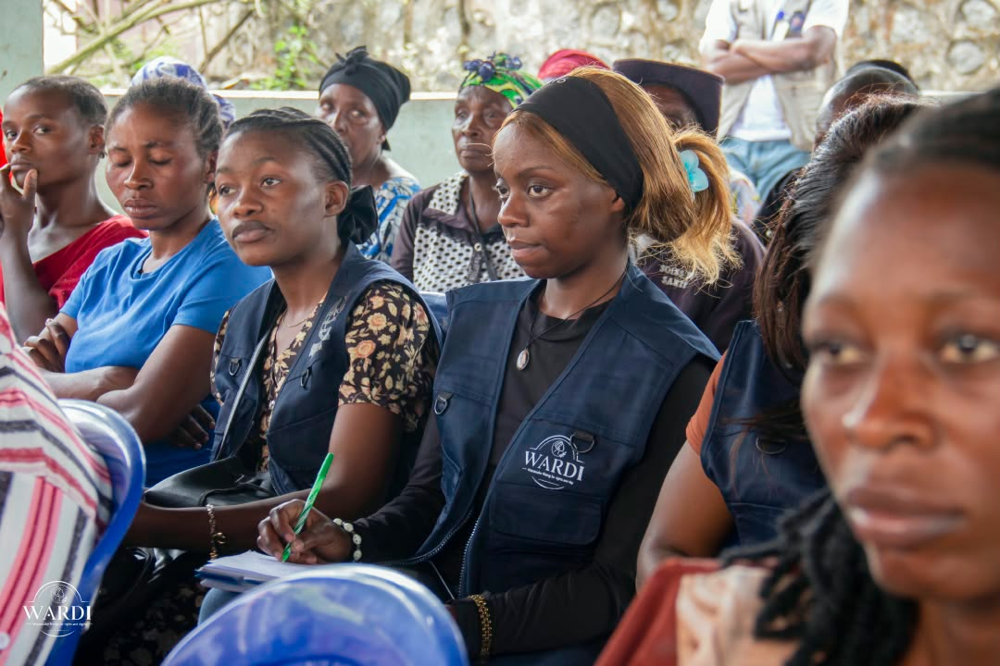
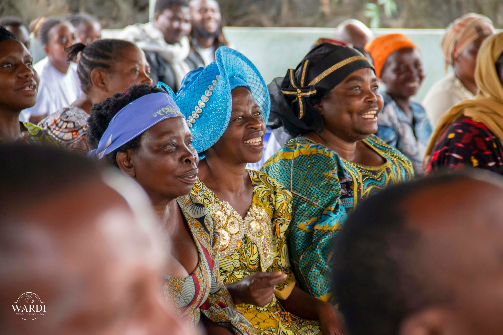
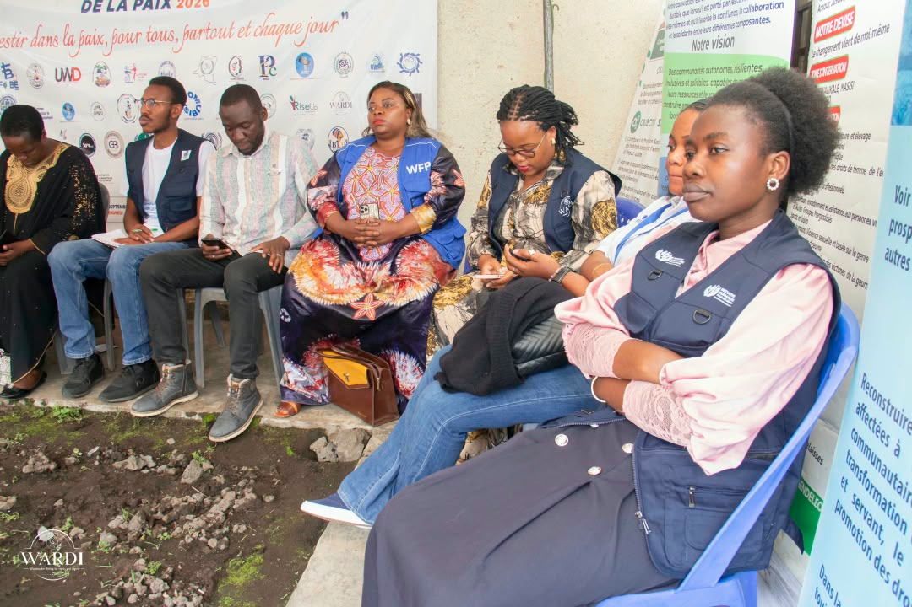

01
Droits & protection
Égalité de genre, lutte contre les VSBG, éducation aux droits humains et citoyenneté.
01 · QUI SOMMES-NOUS
WARDI Asbl est une association congolaise sans but lucratif engagée dans la promotion, la protection et la défense des droits des femmes et des filles.
Basée au cœur du Nord-Kivu, dans une région durement éprouvée par les conflits, WARDI conjugue proximité communautaire et rigueur institutionnelle.
Elle œuvre pour que chaque femme congolaise vive dans la dignité et participe pleinement aux décisions qui façonnent son avenir.
Chaque femme vit dans la dignité, jouit pleinement de ses droits et participe activement aux processus de décision, de développement, de paix et de justice.
Constituée le 22 avril 2021, conformément à la loi congolaise n°004/2001.
Portée et dirigée intégralement par des femmes à tous les niveaux.
Siège social de WARDI Asbl.
Intervention sur toute la RDC, extensible à l'international.
Sous toutes leurs formes, en République démocratique du Congo.
Et participent, à égalité avec les hommes, à toutes les décisions qui façonnent leur avenir.
02 · NOTRE APPROCHE
WARDI intervient autour de cinq axes complémentaires.
Égalité de genre, lutte contre les VSBG, éducation aux droits humains et citoyenneté.
Autonomisation économique, participation politique et gouvernance locale.
Soutien psychosocial, juridique et sanitaire ; santé sexuelle et reproductive.
Agenda Femmes, Paix et Sécurité, Résolution 1325, action humanitaire et PSEA.
Renforcement des OSC féminines, inclusion numérique et du handicap, et plaidoyer.
03 · IMPACT TERRAIN
Quartiers Mugunga & Lac Vert, Goma
Pour une sensibilisation durable
Orientation vers des structures adaptées
WEBINAIRE · JOURNÉE DE LA FEMME AFRICAINE
30 juillet 2026 — deux panels sur la santé mentale et le leadership communautaire, animés par des expertes congolaises.
04 · NOS RÉALISATIONS



05 · GOUVERNANCE
Instance suprême de décision et d'orientation de l'Association.
Supervise la mise en œuvre de la mission et des orientations stratégiques.
Assure la gestion quotidienne et l'exécution des activités de WARDI.
06 · COLLABORER AVEC NOUS
Financer un programme, une activité ou le fonctionnement pour démultiplier notre portée à l'Est de la RDC.
Apporter expertise, formation, outils ou mentorat pour renforcer nos équipes et nos relais communautaires.
Construire un plaidoyer commun avec les pouvoirs publics, les agences internationales et le réseau des Grands Lacs.
Amplifier nos messages, co-organiser des événements et valoriser conjointement nos actions de terrain.
07 · CONTACT
Vous souhaitez collaborer avec WARDI, soutenir nos actions ou en savoir davantage sur notre travail ?